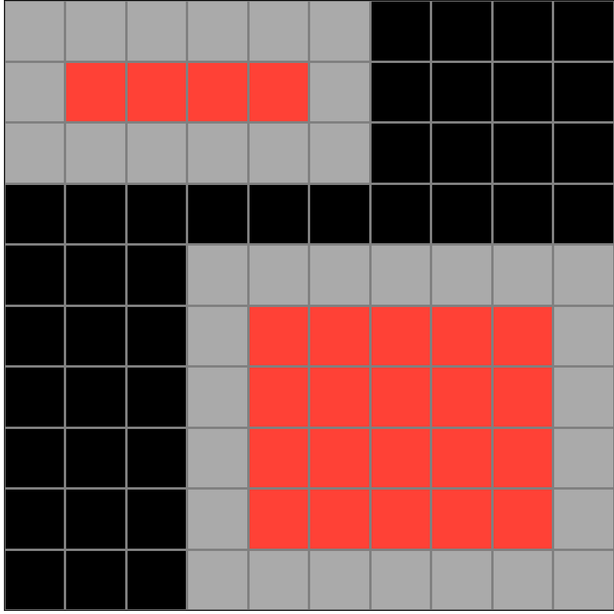

bb43febb.json
Navigation
Train Examples


Test Example


Participant 1
Initial description: The input conists of two solid grey rectangular regions on the grid. The output consists of the same regions but the inner grey squares are replaced by red squares so that a one-square wide grey border remains around the new red squares.
Final description: The input conists of two solid grey rectangular regions on the grid. The output consists of the same regions but the inner grey squares are replaced by red squares so that a one-square wide grey border remains around the new red squares.

Participant 2
Initial description: The example input with a smaller red fill.
Final description: The example input with a smaller red fill.

Participant 3
Initial description: Fill the middle of the rectangles pink, leaving the outside border grey.
Final description: Fill the middle of the rectangles pink, leaving the outside border grey.

Participant 4
Initial description: Color all the gray squares red that are not touching any black squares.
Final description: Color all the gray squares red that are not touching any black squares.

Participant 5
Initial description: To fill the middle of the gray part and leave a boarder all the way round.
Final description: To fill the middle of the gray part and leave a boarder all the way round.

Participant 6
Initial description: solid areas in the input should be converted to a single line of that color with a filled red center in the output.
Final description: solid areas in the input should be converted to a single line of that color with a filled red center in the output.